I-CHING HOLITZKA · 64 CARDS
주역 타로 64괘
카드의 그림과 이름을 살펴보고, 궁금한 괘를 선택하세요.
각 카드의 그림 해설·키워드·연애운·사업운·속마음을 상세 페이지에서 읽을 수 있습니다.
64장의 카드
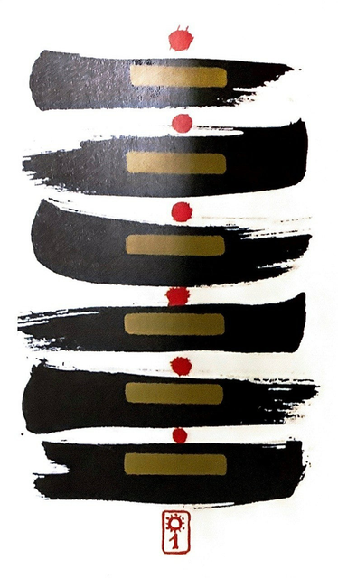
중천건(하늘 건)
만물의 시작! 세상이 열린다

중지곤(땅 곤)
부드럽고 유순한 덕으로 하늘의 일을 돕고 만물을 양육한다

수뢰둔(어려울 둔)
어려운 탄생. 어렵지만 결국에는 새싹을 틔운다
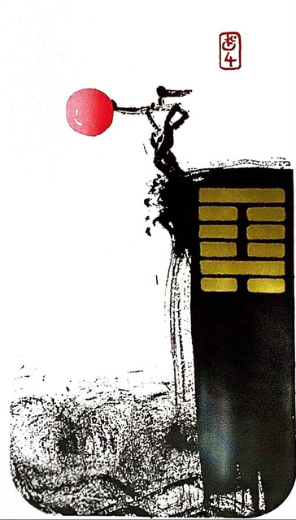
산수몽(어두울 몽)
학업에 힘쓸 순간이라 다른 일은 할 수 없다
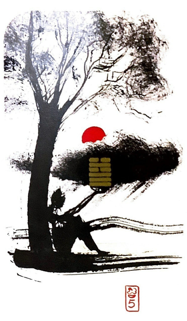
수천수(쓰일 수..기다릴 수)
시기가 아닐 때는 기다리며 힘을 길러라

천수송(송사할 송)
먹을 것이 있으면 시비가 뒤따른다
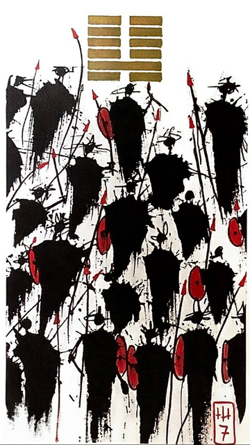
지수사(스승 사.군사 사)
땅 속에 물이 있다.무리.군대를 일으킨다

수지비(견줄 비)
사람이 모여 있으면 반드시 서로 친함이 있다

풍천소축 (작을 소.쌓을 축)
유순한 것이 강한 것을 누르니 일이 실패 하지 않지만

천택리(밟을 리)
범의 꼬리를 밟아도 사람을 물지 않으니 형통하다

지천태(클 태.태평할 태)
(내사랑 천태씨~)
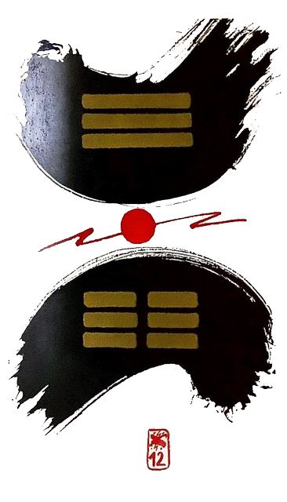
천지비(막힐 비)
천지화합이 이루어지지 않아서 막히다

천화동인 (한가지 동..사람 인)
서로 다른 것들이 모여 하나를 이룬다
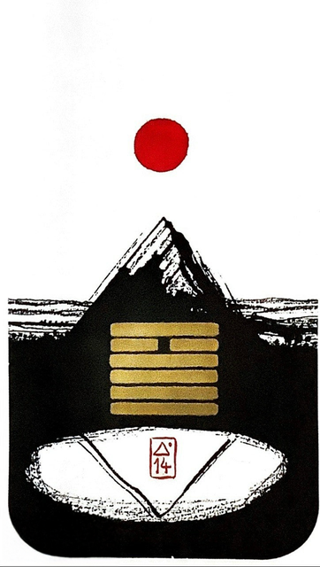
화천대유 (클 대.있을 유)
높은 곳에서 세상을 살피면 큰 것을 얻는다
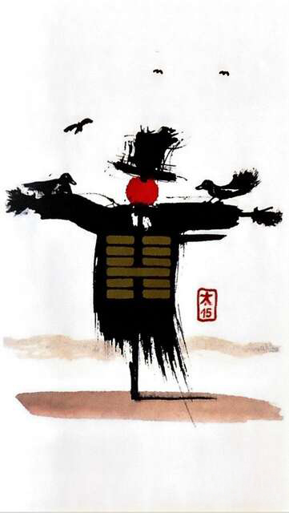
지산겸(겸손할 겸)
겸손히 처신 하면 복이 온다

뇌지예(예비할 예.기뻐할 예)
미리 대비하니 기쁨이 따른다
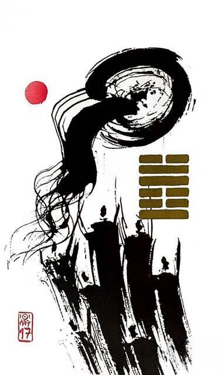
택뢰수(따를 수.추종할 수)
상황에 따라 적극적으로 움직인다

산풍고(벌레 고)
기운이 막히면 사고(일)이 생긴다

지택림(임할 임)
적극 노력하여 일을 만들어가야 한다
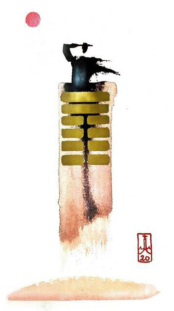
풍지관(볼 관)
겸손함 성품으로 자상하게 살펴본다.

화뢰서합 (씹을 서,다물 합)
장애물을 제거하여 상하의 턱을 합한다
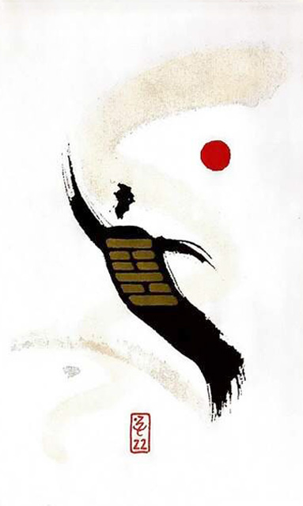
산화비(꾸밀 비)
멋을 중시하여 멋으로 살아간다
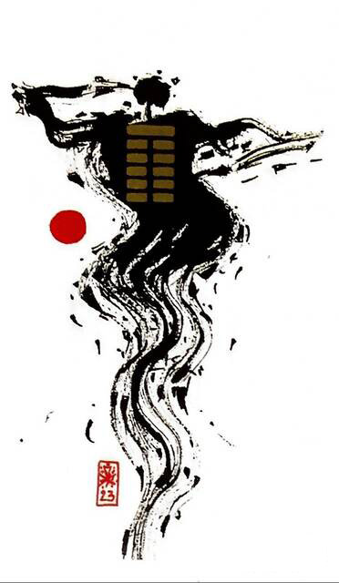
산지박(벗길 박)
절정에 가면 반드시 내려와야 한다.

지뢰복(회복할 복)
하던 일을 다시 한다

천뢰무망 (없을 무.망령될 망)
아무것도 할 수 없다
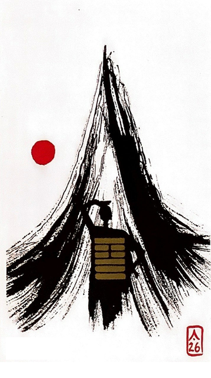
산천대축 (클 대.쌓을 축)
알맹이를 가득 채웠다
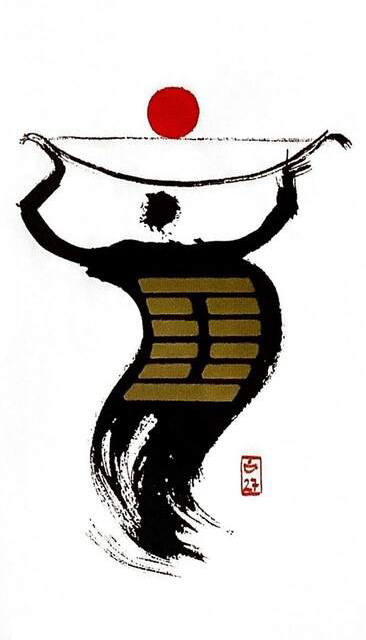
산뢰이(턱 이.기를 이)
(주몽 카드, 활)

택풍대과 (클 대.지날 과)
(삐요삐요 위험)
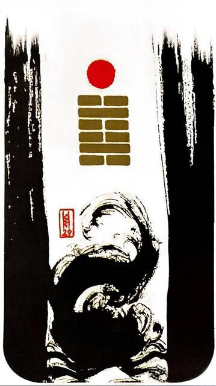
중수감(구덩이 감)
(중수 - 물이 중첩됌)
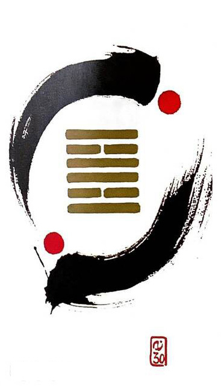
중화리(붙을 여.떠날 리)
(불타오르네~파이어~ 쥐불놀이)

택산함(다 함)
(한번을 만나도 느낌이 중요해~)

뇌풍항(항상 항)
(나 항상 그대를~)
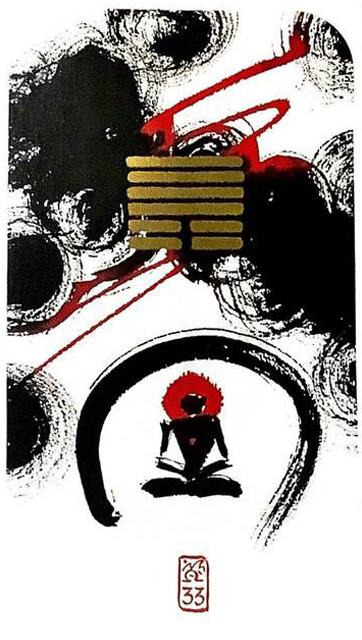
천산돈/천산둔(달아날 돈.피할 돈)
(박수칠때 떠나라! 알아서 피함)

뇌천대장 (클 대,씩씩할 장)
활기차게 나아간다

화지진(나아갈 진)
대지에 태양이 솟으니 만물이 성장한다

지화명이 (밝을 명.상할 이)
빛이 사라져 암흑속에 파묻히다
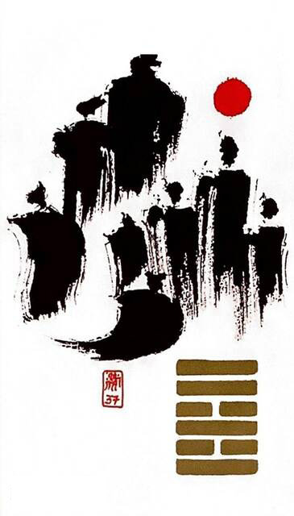
풍화가인 (집 가..사람 인)
구성원들이 화합하여 가정의 발전을 도모한다
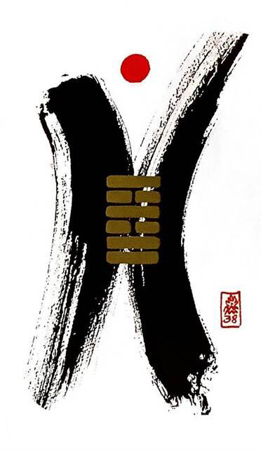
화택규(사팔눈 규)
빗나가고 뒤틀려 서로 시기한다
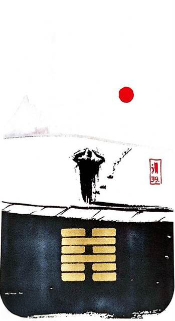
수산건(절뚝발이 건)
소향 “가슴만 알죠” (사의찬미OST)

뇌수해(풀 해)
(대한독립만세, 화살표모양,이사,이동)

산택손(덜 손)
산아래에 있는 저수지의 물(산-택)은 들판을 적시기 위해 흘러간다

풍뢰익(이로울 익)
바람이 불고 천둥이 치니(풍-뢰) 비가 온다.

택천쾌(터놓을 쾌/무너진다 이지러진다 )
덩크슛(지금이순간 과감하게 덩크슛하는 그림 연상)

천풍구(만날 구)
(나이트클럽에서 만나~)

택지취(췌)(모을 취/취합하다 )
강강술래, 천하동인 동생 괘
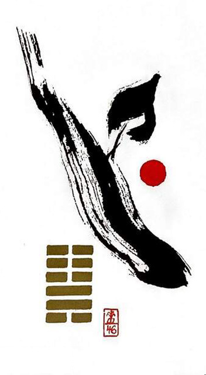
지풍승(오를 승/상승)
(날아올라~저하늘~♫)

택수곤(곤할 곤/곤란 빈곤 곤궁)
택 / 수 -> 연못물이 밑으로 빠지면 물고기가 헐떡거리는 모습 상상
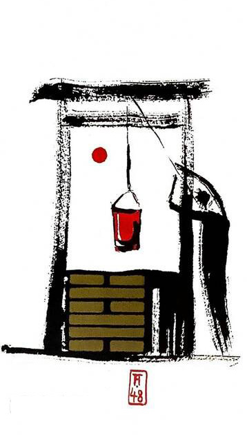
수풍정(우물 정)
수 / 풍(1바람,2나무) 나무 두레박 무한반복

택화혁(바꿀 혁)
택/화 -> 연못의 물이 불을 만나 공기로 끓어오름
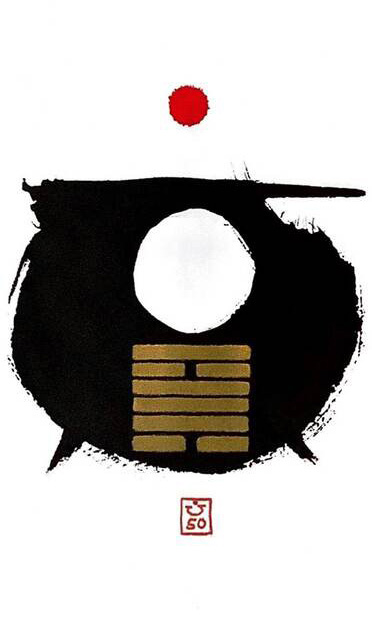
화풍정(솥 정)
대형 밥솥 생각

중뢰진(우레 진)
우레 - 움직임/장남, 신문고 연상(=유니버셜웨이트 타워카드)

중산간(그칠 간)
주역(변함)에 위배되는 카드, 숙성의 시간(구간), 대기만성 카드
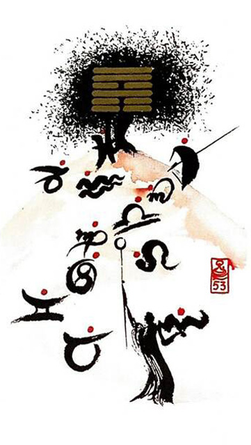
풍산점(점점 점)
풍/산(산위에 부는 바람 또는 나무), 별자리-점성학 기호
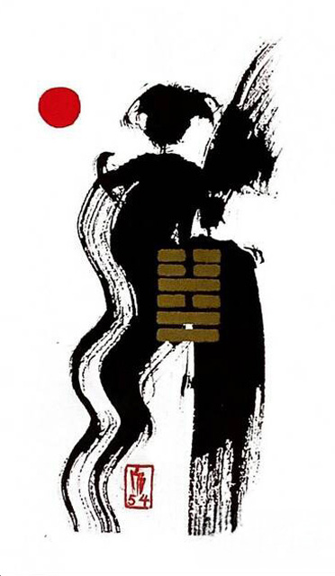
뇌택귀매 (돌아갈 귀.누이 매)
첩으로 팔려감, 조건만남 - 대표적인 불륜 카드
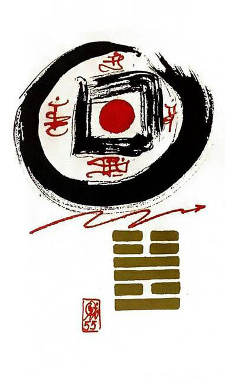
뇌화풍(풍년 풍)
밝게 드러내어 일을 하니 수확이 크다

화산려(나그네 려)
(♫~모모는 철부지, 모모는 무지개

중풍손(부드러울 손)
풍 / 풍 -> 바람 빠짐 <-> 중천건(애너지뿜뿜)과 반대 기운

중택태(기쁠 태)
연못이 중첩(기쁨+ 기쁨 -> 행복, 소녀 + 소녀)

풍수환(흩어질 환)
풍 / 수 -> 물위에 바람 또는 나무(돛단배), 물보라)

수택절(마디 절)
ㅅ -> 신중(적당한 강도로 적당한 절제)

풍택중부 (가운데 중.미쁠 부)
풍/택 : 연못에 바람, 미쁠 부 -> 믿음, 신뢰

뇌산소과 (작을 소.지날 과)
중용에 어긋나면 이득이 없다
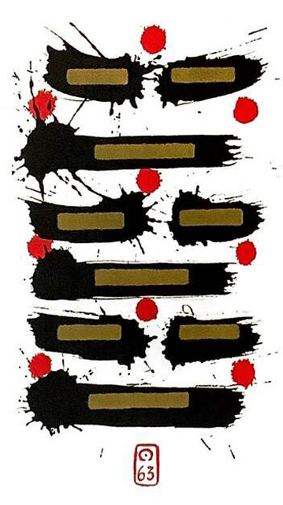
수화기제 (이미 기.건널 제)
(♫~떨리는 수화기를 들고~너를 사랑해~♫)
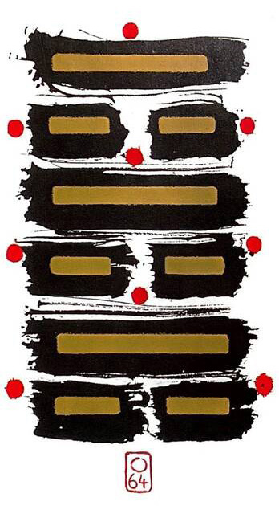
화수미제 (이닐 미.건널 제)
완성을 위해 다시 노력해야 한다
검색 결과가 없습니다. 다른 번호나 키워드로 검색해 보세요.